The HorrorStudio Director is a Godot plugin. Drag rooms, doors, things and characters into a scene, put the story
beside them as chapters, tasks, events, dialogue and endings, and press F5. Underneath runs the studio's own
runtime: the walking, the clicking, the inventory, the flashlight, hiding, the HUD, the pause menu and the saves.
Godot 4.7GDScriptdrag and dropevents: when, if, thenthe story in play orderKimodo motions
1Start a project
From the studio's folder, make a new Godot project with everything in it. --sample starts you from the
sample house (a hall, a kitchen, a locked bedroom, a letter, a key, Mari, a jumpscare and two endings); leave it out
for an empty game with one room.
python tools/godot_director.py new ~/Games/MyGame --sample
Open the folder in Godot 4.7 (Import in the project manager, pick its
project.godot). Both plugins are already switched on. Press F5 and you're playing.
main.tscn
The game: an HSGame with the levels and the story under it. F5 plays it.
addons/
The Director, the runtime (horrorstudio) and the look (horrorstudio_look). Don't edit them here: they're copies.
game/
The sound shelf (240 sounds by name), the little things' lives, and the Character Studio exports your characters wear (people/).
kimodo/, motions/, bodies/
Kimodo's stages and motions, the motions brought in, MHR's body to try them on.
guide/
This guide, also opened by the dock's Guide button.
Already have a Godot project? Put the add-ons into it (again after every pull of the studio: they're copies):
Tip.install ... --link makes the add-ons links into the studio's folder instead of
copies, so a pull reaches the project straight away. Both commands are also in the launcher (./studio, the
Godot section).
2The editor and the dock
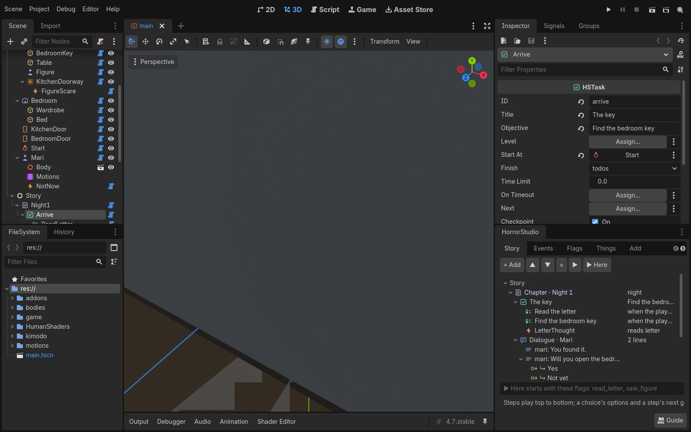
The sample in Godot's editor: the scene tree on the left (the house's rooms and things, then the story),
the Inspector top right, the HorrorStudio dock under it.
Everything is a node in the scene tree. You add them three ways: the dock's Add tab (a click
puts one in front of the camera, a drag drops it into the 3D view), the Story tab's + Add menu
(a chapter, a step, a to-do, an event, a line or an answer, put where it belongs), or Godot's own
Add Child Node (search for "HS"). Select a node and the Inspector
shows its settings, only the ones that matter for what it is.
The dock sits under the Inspector, so a row you pick in the dock opens right above it. It has seven tabs:
Story
The quest log: chapters and their steps in the order they play. Add, drag to reorder, play from any step.
Events
Every event as a sentence, and templates (a jumpscare in an area, the lights dying...).
Flags
Every flag: where it's set, where it's checked, and a warning for one nothing sets.
Things
The items, notes, things to use, characters, rooms, areas, doors, spots, paths and lights, with their ids.
Add
Every node as a button: click or drag.
Check
The game compiled as it will play, and what's wrong.
Kimodo
Send a room to Kimodo, bring a motion back.
Under the tabs: a line saying what just happened (or what's missing), and the Guide button,
which opens this page (so does Project → Tools → HorrorStudio Director guide).
Rooms, doors, things, characters, areas, spots, paths and the story's steps each have an id
(the Inspector's first field): it's how events, doors and to-dos name each other. It's the node's name in lowercase with underscores (BedroomKey is bedroom_key) and follows
the name when you rename the node, until you type an id of your own. Fields that name something suggest the ids of the
right kind as you type.
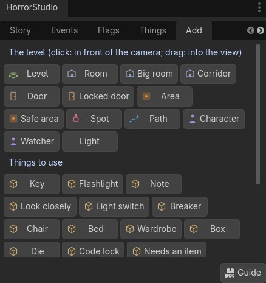
The Add tab: hover a button for what it makes.
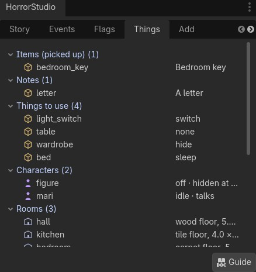
The Things tab: everything in the scene by kind, with the id events call it by.
Tip. Drag the dock's edge to make it wider; the rows read whole at about 450 pixels.
3Build a level
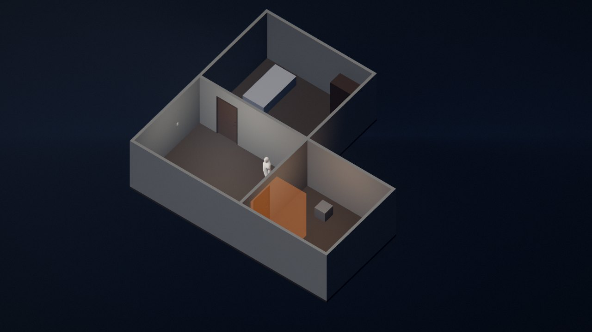
The sample house from above (ceilings off): the hall with Mari, the kitchen through its door (the orange box
is an area with the jumpscare in it), the bedroom behind a locked door.
A level is an HSLevel: a place the game plays in. Build it under the HSGame, or as its own
scene (its root an HSLevel) dropped into main.tscn. Inside it:
Rooms
An HSRoom makes a floor, four walls and a ceiling from its size (the space inside:
width, height, depth). Its origin is the middle of the floor; north is Godot's −Z. Turn walls off with walls,
give it your own materials (in a StandardMaterial3D tick UV1 → Triplanar and
World Triplanar, so a texture tiles by the metre whatever the room's size), and set its
floor kind (wood, stone, tile, carpet, dirt, metal, water) for the footsteps. Its id is an area: an event
can wait for "the player enters kitchen".
Two rooms side by side: set them a wall's thickness apart (12 cm unless you change wall) and turn off one
room's wall where they meet, so the wall isn't doubled. In the sample the hall keeps its east wall, the kitchen has
none on its west, and the kitchen's door sits in the hall's wall.
Doors
An HSDoor on a room's wall cuts its own opening: drag it along the wall and the hole
follows. It swings away from the player. Locked by an item's id keeps it shut until the player has that item (or
flag:name, a flag). It can have a peephole and a latch (a thumb turn to lock it from inside).
Put a door model in as its child and it wears that instead of the plain leaf.
Doorways and windows with no door are the room's openings: a side, an offset along the wall, a width, a
height and a sill.
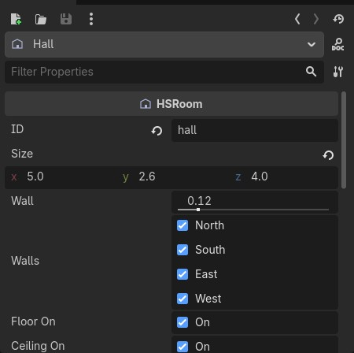
A room in the Inspector.
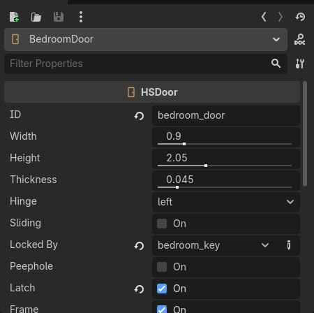
A door: locked by bedroom_key, with a latch.
Areas, spots and paths
HSTrigger, an area: a box the player walks into (orange in the editor, invisible in the game). Put events in it. Safe: a watching character can't see the player inside.
HSSpot, a spot: where the player starts (the level's start, or a spot named Start), where a task puts the player, where a character stands. It faces the way its arrow points (its +Z).
HSPath, a path a character walks: select it and draw points with Godot's path tools (Add Point, then click the floor), or give it HSSpot children you drag around. Mode: loop, there and back, or once; waits at its points.
Your own models and lights
Drop any model into the level. If it has collision it stops the player (Godot's own physics); if you want the player
to click it, put it inside an HSThing (next section). Every OmniLight3D and
SpotLight3D in a level belongs to the story by its node's name: light switches flip the lights in their room, a
power cut turns them off, an event's Light action finds them. A light with "candle" or "fire" in its name keeps
burning in a power cut. Light the level however you like; the look plugin's light nodes work as usual.
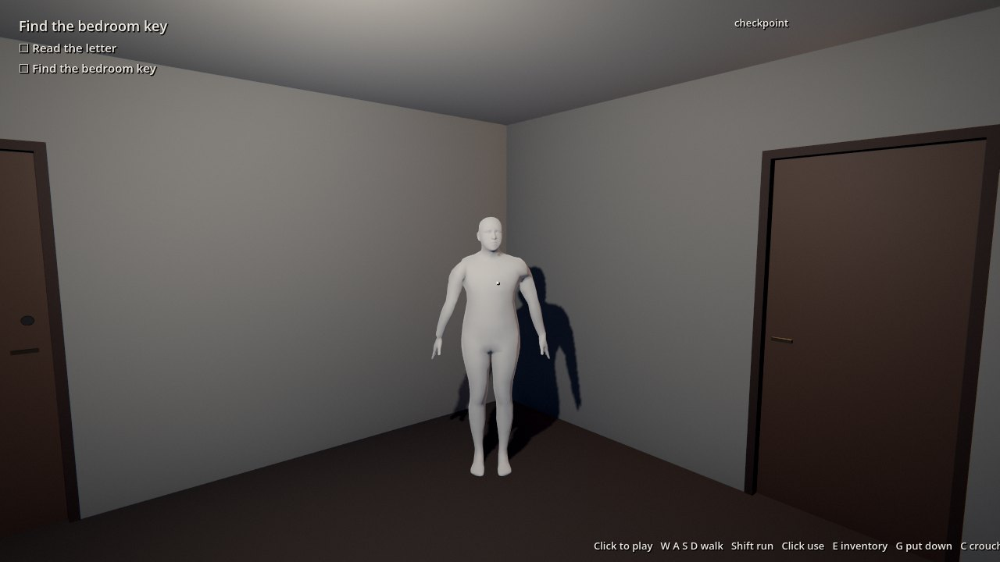
The hall in the game: the objective and its to-dos at the top left, Mari waiting.
4Things to use
An HSThing is something the player does something with. Pick its use; the Inspector
shows only that use's fields. Put your model in it as a child (until you do, a stand-in box shows), give it a
display name for the cursor ("Read · A letter"), and it's done.
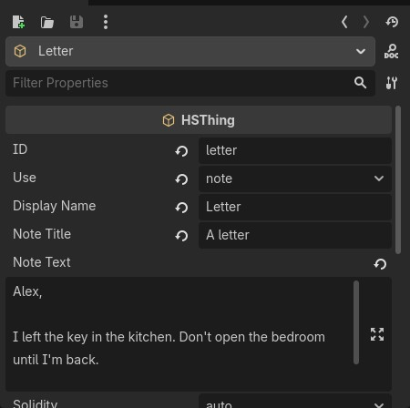
A note: just a title and the words.
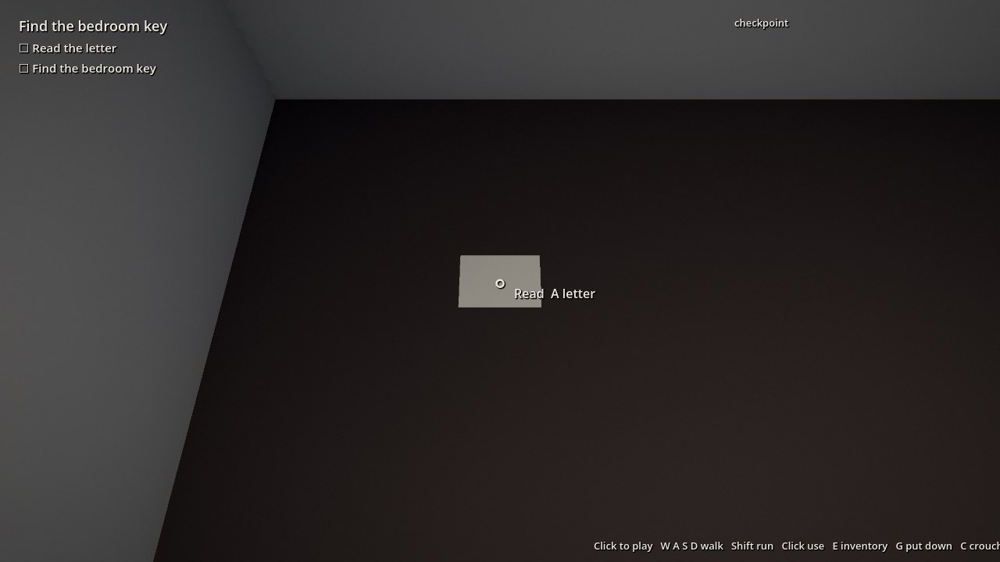
In the game, the cursor says what a click will do.
Use
What the player does, and what to fill in
pickup
Takes it into the inventory. item is its id (a locked door or an event asks for it). Tick flashlight and F switches it.
note
Reads it on a card: note title, note text.
inspect
Takes it up and turns it in the hands: inspect text under it.
switch
A light switch: the lights in its room, or the ones in switches.
breaker
The power: off for the whole level, and back on.
sit
Sits down; a click stands up again.
sleep
Lies down, the view goes dark (a chapter card next). sleep needs: flags that must be set first.
hide
Climbs in (a wardrobe, a locker); a watching character can't see them. see through: how much they see out.
carry
Carries it in both hands; G puts it down.
roll
Throws it like a die; the face it lands on is heard.
code
A keypad: the right code sets its flag (opens flag).
use_item
Uses an item on it (needs item), which sets its flag; consume takes the item away.
clean
A stain scrubbed away by holding the button; clean with an item (a mop).
game
A board game at a table (board game). The game plays chohan (two dice, odd or even) so far; the desk's other games come later.
none
Nothing to do: a solid thing events can name (shown, hidden, knocked on).
Hidden at start keeps a thing out of the level until an event shows it: the key that turns up later, the
figure for a jumpscare. Solidity says whether it stops the player (furniture does by default; a key or a note
doesn't).
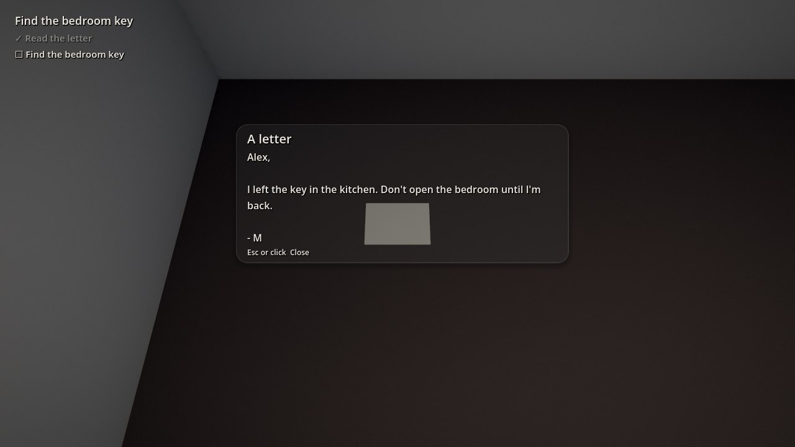
The letter, read.
5Characters
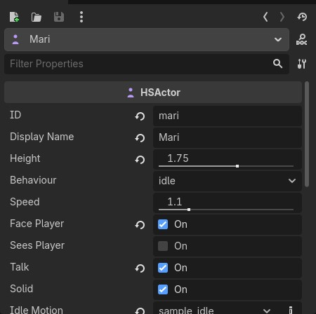
Mari in the Inspector.
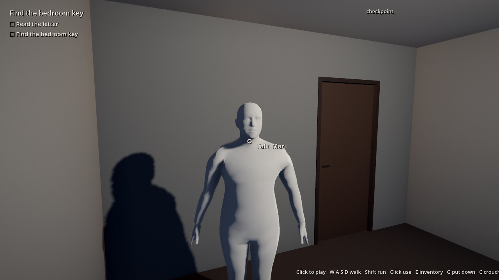
In the game: Talk on the cursor.
An HSActor is a character. Put her model in as a child: a Character Studio export
(Content/Studio/People/<name>/export/<name>.glb, copied into the project) or any rigged model.
Without one a stand-in figure shows. She faces her +Z.
Or leave her empty and type the character's name in studio character: the game dresses her in that export
with the Character Studio's own skin and eyes. install copies the export into the project
(game/people/), so run it again after you set one. Kimodo motions need the model child, since they go onto
its skeleton.
Behaviour: idle (stands where you put her), sit (on a seat), path (walks an HSPath), patrol (several paths in turn), or off (not there until an event brings her). Face player turns her to them.
Sees player: she watches; in her cone and range the suspicion meter fills, and when it's full "caught" happens (an event can wait for it).
Talk: the cursor says Talk, and a click is heard as "the player uses her id": put an event in her to answer it.
Idle motion, walk motion: animations on her AnimationPlayer (a Kimodo motion you brought in, §10).
Hidden at start keeps her out of the level until an event shows her; solid off lets the player walk
through her; speed is her walking pace.
6The story
Steps play top to bottom in the scene tree: a task, then the next step, and so on. For a straight game,
that's all you do: put the steps in order. Group them in chapters if you like.
Chapter · Night 1→Task · The key→Dialogue · Mari→Task · The bedroom→Choice · Hide or sleep→MorningorAsleep
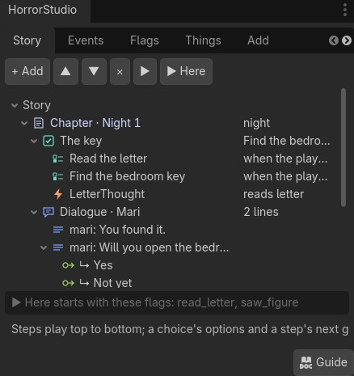
The Story tab: the sample's chapter, its steps and their parts.
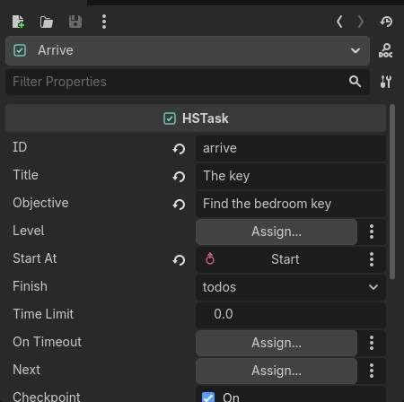
A task in the Inspector.
Node
What it is
HSChapter
A group of steps with a title card when it starts (the view goes dark, the title, an autosave), the time of day from there on, and the level its tasks play in.
HSTask
What the player does: an objective (top left), its HSTodo children (the to-do list), its events, where the player starts at, and when it's finished: when every to-do is ticked, when an event says finish task, or never (free roam). A time limit runs out into on timeout (a death, a chase).
HSTodo
A line on the list, ticked by what the player does (done when: picks up the key, enters the cellar, locks the door) or by an event. It can fail, have its own time, or be hidden.
HSDialogue
A conversation played live: the player can look around (and walk, if standing). Its HSLine children in order: who says it (a character's id; empty is the player's thought) and the words.
HSOption under a line
Makes the line a question. Each answer: its label, what she says back (reply lines), the flags and karma it sets, and go to a step to branch. Two answers at most.
HSChoice
Where the story branches. By flags (the first option whose flags are set; the last with none is "otherwise"), by act (the player plays on until one option's when happens), or by karma. Each option's go to is where it leads.
HSEnding
Where a way through the story stops: a title and words. A death offers a retry from the last checkpoint.
To branch: a choice's options, a dialogue answer's go to, or a task's next (to skip ahead or rejoin).
An ending ends its way, so put each branch's steps after the choice and point the options at them.
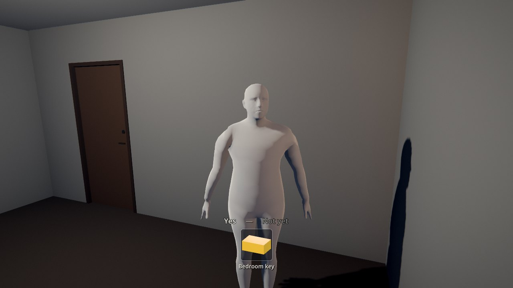
Mari has asked; her answers come up as her line ends. Pick with A/D and Enter, or the mouse.
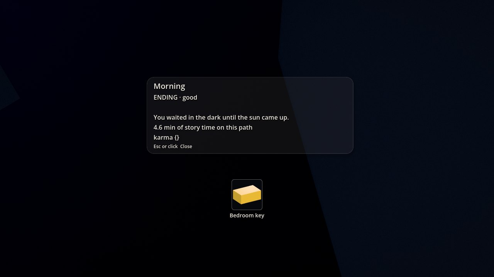
An ending's card.
7Events: when, if, then
An HSEvent is how you make things happen: jumpscares, thoughts, sounds, lights, doors,
characters arriving. It reads as a sentence:
When the player enters the kitchen's doorway, if they've read the letter, then
the figure shows for a second, they think "What was that?", and saw_figure is set.
Making that one, step by step
Add an area (Add tab, Area) and put it in the kitchen's doorway. Give it a size.
Add the figure: a HSActor (or an HSThing) with hidden at start ticked.
Add an HSEventinside the area. An event inside an area with no when fires when the player walks in.
Require flags: add read_letter. (Block flags are flags that must not be set; require items the player must hold.)
Actions: add three, pick each one's verb: jumpscare (thing: the figure), think ("What was that?"), set_flag (saw_figure).
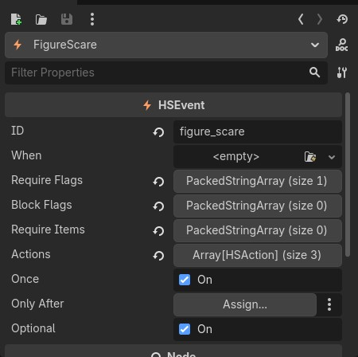
The event: no when (it's in an area), one required flag, three actions.
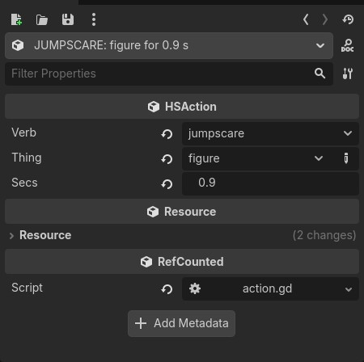
One action: its verb's fields only, its title the sentence it reads as.
The Events tab's templates make that whole thing in one click: pick Jumpscare in an area (after
flags), press Make, and an area with the event in it appears in front of the camera,
with a hidden figure behind it (or the hidden character you already have). Set the flags it waits for, move them where
you want.
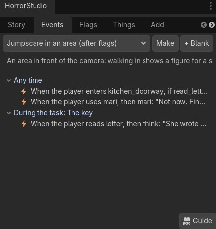
The Events tab: templates on top, every event as its sentence, grouped by when it listens.
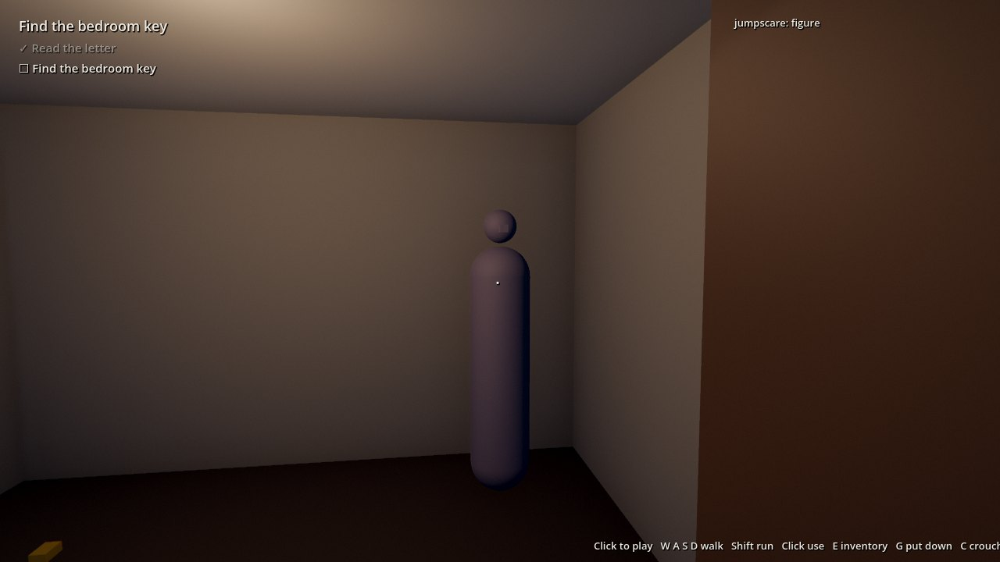
In the game: the figure (here a stand-in; put your model in it).
Where an event sits is when it listens
Inside a task: only while that task is on.
Inside a chapter (not in one of its tasks): through all of that chapter's tasks.
Anywhere else (the game, a level, an area, a thing, a character): the whole game.
Only after a step: held back until the player has reached that step.
Once (the default) fires once a playthrough; untick it for every time (every: seconds between).
When
Leave it empty inside an area or a room (entering it), or inside a thing, a door or a character (using it).
Otherwise pick its kind and what it's about:
enter, leave
the player enters or leaves an area or room
use, pickup, read
uses a thing, picks up an item, reads a note
start
the task starts
flag
a flag is set
look
looks at something for a few seconds, from close enough
after
some seconds after another event
answered
a question is answered (any answer, or one)
caught, hidden
a watching character catches them; they're hiding
ticked, all_ticked
a to-do is ticked; every to-do is
torch, power, locked
the flashlight or the power goes on or off; a door is locked
dropped, arrived
something is put down (somewhere); a character gets where she was sent
custom
anything the story format can say
Then: the actions
Words
say (a character's line), think, whisper, objective, ask (a question with two answers, each setting a flag), chapter card
Scares
jumpscare, glimpse, knock, lights die, slam a door behind, swap two things while unseen, sound, music (silence, calm, uneasy, dread, chase), fade, turn the player's eye
The world
door (open, close, lock, unlock, slam), light (on, off, flicker, dim), power, flashlight, show, hide, move (a thing, a character or the player to a spot), a little thing's state (the kettle on), a car passing
Characters
behave (stand, sit, walk a path, patrol, go to a spot, off), play a motion, play a dialogue
Progress
set or clear a flag, give or take an item, to-do (add, tick, fail), finish the task, checkpoint, karma, a counter, wait
Anything else
custom: an action as the story format writes it
Templates in the Events tab: a jumpscare in an area after flags, the lights dying in an area, a door slamming behind
the player, a knock at a door, a whisper when something's looked at, a thought on picking something up, a character to
talk to (with a question), the task finished on arriving somewhere, and something shown once a flag is set.
8Flags and where you are
A flag is a yes that the game remembers: read_letter, saw_figure,
promised. Events set them and check them; answers set them; a choice branches on them. You never declare
one: using a name makes it.
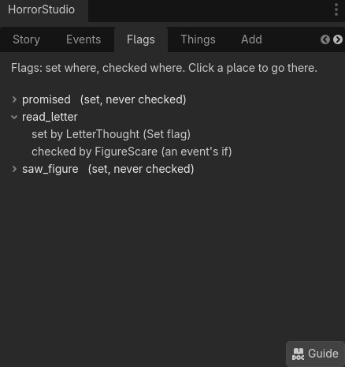
The Flags tab: read_letter is set by the letter's event and checked by the jumpscare.
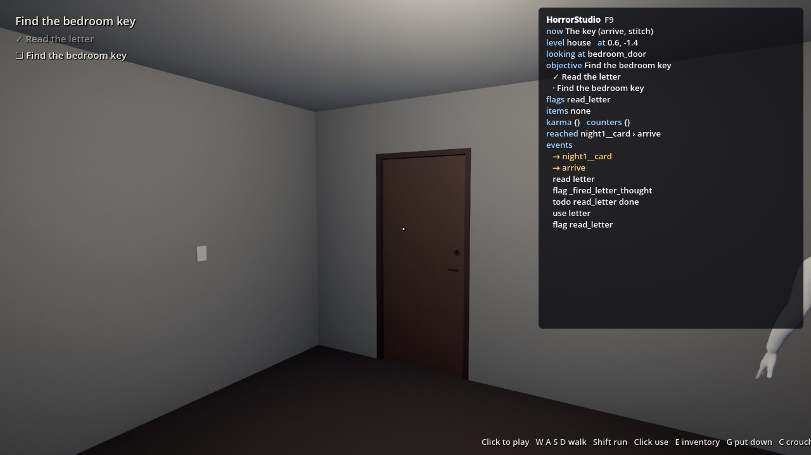
F9 in the game: where the player is and what's set.
The Flags tab lists every flag with where it's set and where it's checked. ⚠ checked, never set usually means a typo, or an event still to make.
While the game runs from the editor, the Story tab marks the step the player is at with ▶, the Flags tab marks the flags they've set with ●, and the Events tab ticks the events that fired.
F9 in the game shows the same: the step, the level, what they're looking at, the objective and to-dos, flags, items, karma, counters, and the last events as they happen.
9Play and test
F5
Plays the game from the start.
▶ Here
(Story tab) plays from the selected step. Type the flags it should start with in the box under the tree (what earlier steps would have set).
F6
On a level's own scene: that level alone, free to walk around, with its events. Good for testing a level before the story's there.
Check
The game compiled as it will play. ✕ won't play right (a task that never finishes, an option that goes nowhere); ⚠ is worth a look (a step nothing leads to, a flag nothing sets). Click a line to go to its node.
lighting: off
(on the HSGame) a flat test light, for playing before you've lit the level.
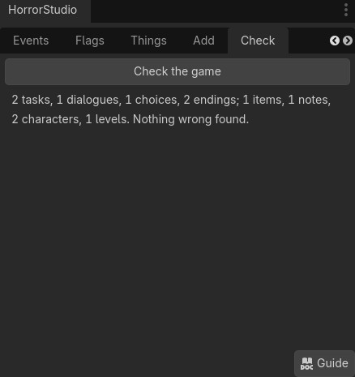
The Check tab on the sample.
The player moves with Godot's own physics: whatever has collision stops them, a step lower than 35 cm is walked up,
and they fall off ledges. The cursor clicks things within 2.2 m.
10Kimodo, there and back
Make a character's motion in Kimodo, in the room it'll play in, and bring it back as her own animation.
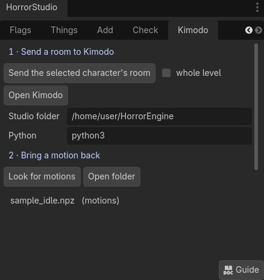
The Kimodo tab.
Select the character (or a spot) and press Send the selected character's room. The room she's in and the rooms next to it go to Kimodo as its stage, seen from where she stands, scaled to her height. (whole level sends all of it.)
Open Kimodo starts Kimodo's demo and opens it in your browser. The room is in its Stage panel.
Make the motion there and save it (Exports, NPZ, Download; or Send to Studio).
Back in Godot, Look for motions lists the saved .npz files (from the project's kimodo/motions, the studio's Saved/Kimodo and your Downloads). Pick one.
Name it, tick in place for a walk (the path moves her) and loops for an idle or a walk, choose whether it's her idle or walk, and press Import onto the selected character.
The motion lands on her own skeleton (the Character Studio's MHR, Kimodo's own, a Mixamo character, or any model
imported with Godot's humanoid bone map), is saved in motions/<her id>/, and starts playing. In the
game her idle motion loops while she stands and her walk motion while she walks; an event's motion
action plays one once.
The studio folder (the one with tools/kimodo.py) is filled in when the project is made;
set Python to how you run the studio's tools (python3, uv run python...). Kimodo itself
must be set up first (python setup/setup.py kimodo).
Not yet. Fingers keep their rest pose, and MHR's twist bones don't share the turn.
11Keys in the game
WASD
Walk (the mouse looks). Shift runs, C crouches.
Left click
Use what the cursor's on (hold it to scrub a stain). The first click captures the mouse.
E
Show or hide the inventory; the mouse wheel turns it.
G · Q
Put the thing in your hand down · lower the hand.
F
The flashlight, once you have one.
A/DEnter
Pick an answer (or point and click).
Esc
The pause menu: save, settings, quit.
F9
Where you are: the debug panel.
12Keeping it up to date
The add-ons in a project are copies: after you pull the studio, run python tools/godot_director.py install <project> again (or use --link once and never think about it).
python tools/godot_director.py check builds the sample, plays it to its ending, tests the Kimodo link and drives the dock in the editor. It ends with DIRECTOR ok.
python tools/godot_director.py guide makes this guide's pictures again (Godot opens a window for a few minutes).
The notes behind all this: docs/GODOT_DIRECTOR.md.
13When something's wrong
No dock
Look for the HorrorStudio tab beside the Inspector (Godot remembers where docks were), or reset the layout: Editor → Editor Layout → Default. Check both plugins are on: Project → Project Settings → Plugins.
Walks through my model
It has no collision. Give the model collision when you import it, or put it inside an HSThing set to solid.
Can't click it
Only HSThings, doors and characters with talk take a click, from 2.2 m or nearer, with nothing in between.
An event never fires
Open Check, then Flags (a ⚠ flag is spelled differently somewhere). Is it inside a task that isn't on? Was it once and already fired? Press F9 to watch the events as they happen.
Something points at the wrong node
Ids follow renames only until you type your own; the Things tab lists every id. Fields suggest the ids that exist.
A motion won't play
The name in idle motion or walk motion must be the imported one; her model must be inside her; her bones must be MHR's, SOMA's, Mixamo's or Godot's humanoid.
It's too dark to build
Set the HSGame's lighting to off for a flat test light, or turn a room's ceiling off while you work.
Not yet.
A choice by act can't take its ways from a dialogue's answers (use the answer's go to), and an event can't sit in a dialogue (give its line actions instead).
A kit thing or a CC0 library prop isn't one click yet: drop its .glb into an HSThing.
Board games: only chohan plays so far.
The desk can't open a game made here, and a game made here can't go back to the desk: the scene is the game.
14Every node
The level
HSLevel
A place: its start, time of day, look and weather over the game's.
HSRoom
Floor, walls, ceiling from a size; doors on its walls cut openings; openings for the rest; floor kind; materials; a wet floor.
HSDoor
A leaf on its hinges or sliding, in a frame; locked by an item or a flag; peephole; latch; your model as its child.
HSThing
Something to use (§4); your model as its child.
HSTrigger
An area to walk into; safe or not.
HSSpot
A spot facing its arrow; a wait when it's a path's point.
HSPath
A way to walk: points drawn or HSSpots; loop, there and back, once.
HSActor
A character (§5).
The story
HSGame
The main scene's root: the title, the player's name, the time of day, the look, the camcorder tape, the grade, the HUD's theme, lighting, weather, counters, F9.
HSChapter
Its steps; a card, a time of day, a level.
HSTask
An objective, to-dos, events, a start, when it's finished, a time limit, next.
HSTodo
A line on the list: done when, fail when, a time, hidden, asked by.
HSEvent
When, if (flags, items), then (actions); once or every time; only after.
HSDialogue
Lines played live; who the view holds on; next.
HSLine
Who says it, the words, actions as it starts; answers under it.
HSOption
An answer (a label, her reply, flags, karma, go to) or a choice's way (flags, when, karma).
HSChoice
By flags, by what the player does, by karma.
HSEnding
A title, a kind (good, bad, neutral, secret, death), its words.